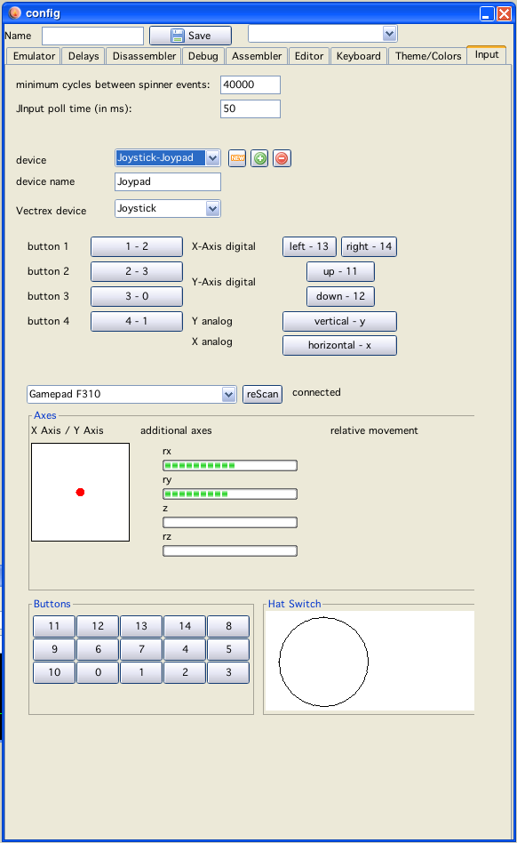

saves the configuration (after a valid name was entered).
saves the configuration (after a valid name was entered).

input settings
Here you can configure additional input settings for different inout "hardware" for use with the emulator. The code is based on the "JInput" library.
The tab is split into two halfs, the upper half representing the vectrex "side" the lower half representing the input device parameters.
There are at the moment two types of vectrex input types:
Joystick
spinner (like atari driving paddle)
Pressing one button on the vectrex half enables "input chosing" - pressing (or moving) the actual hardware of the selected "real" input device - connects the two sides.
Note:
When the mouse is chosen as an input device - to configure buttons "other" than the left mouse button:
click button with left mousebutton and HOLD the left mouse button pressed
click the other button you want to use, after that release the left mouse button
the configuration is activated by a "button press" event and finished by the first "button release" event
thus the first button that is released is taken as the configured input button
Pressing saves the configuration (after a valid name was entered).
Upon the next start of a vecxi window, the new input settings will be appear in the Joyport selection boxes.
Devices will be remembered for the next vide-sessions, however should the device not be available, it won't appear in the combobox.
Note:
There is a global setting for spinner emulation: "minimum cycles bewteen spinner events". Following an explanation where this value is derived from, and when you might want to change it:
The driving atari-controller works thus, that the state of two switches form a 2 bit value, the actual spinner "rotates" the switch states 00 01 10 11 (binary).
The direction of rotation is computed via two of such states:
left direction is computed when following states succeed each other:
00 -> 01
01 -> 11
10 -> 00
11 -> 10
right direction is computed when following states succeed each other:
00 -> 10
01 -> 00
10 -> 11
11 -> 01
All other succeeding "pairs" of states are "illegal" or no "movements" and are as such taken as "no movement".
The emulated paddle sets these paddle "button" values (button 1+2 of the used joyport) in the correct order at "fixed" intervalls. The minimum intervall these values are set is the cycle count given in the parameter "minimum cycles bewteen spinner events".
(if you use analog emulation as input, than "slower" spinning is a multiple of that value)
So...
If your vectrex game, refreshes once each 30000 cycles and you call the paddle "read"-routine every 30000 cycles everything is fine (default setting).
But if your game refreshes each 20000 and also reads paddle values each 20000 cylces the above state-order will "hickup" and some states will be read as "no movement".
Same happens if you read more paddle events per update round.
I think for most games the 30000 will be ok, but with the value "minimum cycles bewteen spinner events" you can actually alter the emulation of the paddle to accomodate possible slower games or multiple update readings.